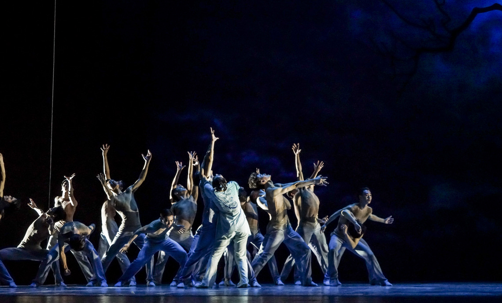
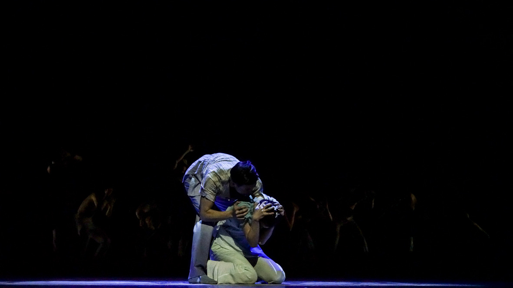
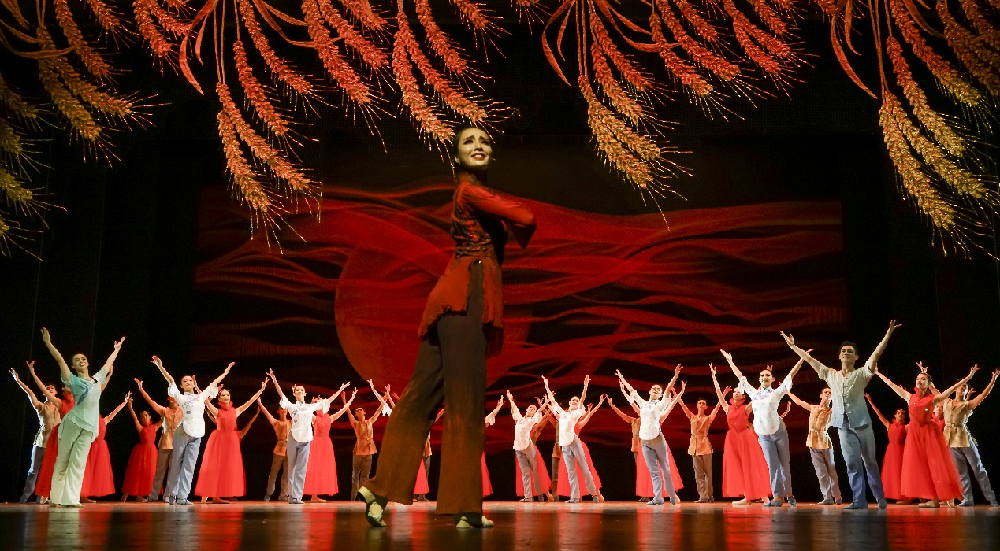
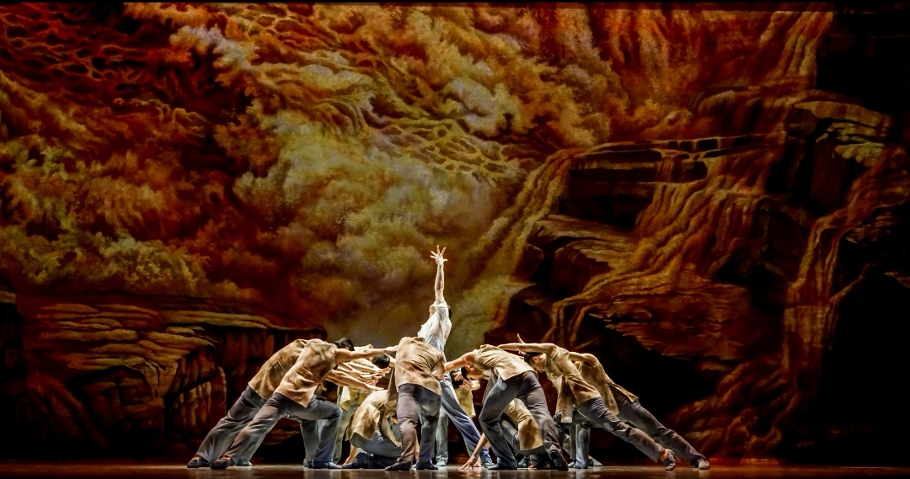
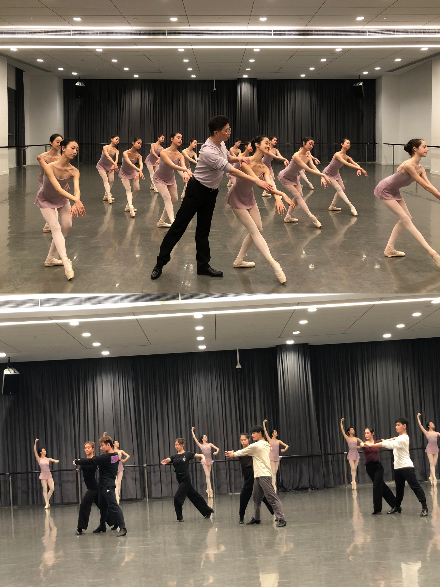
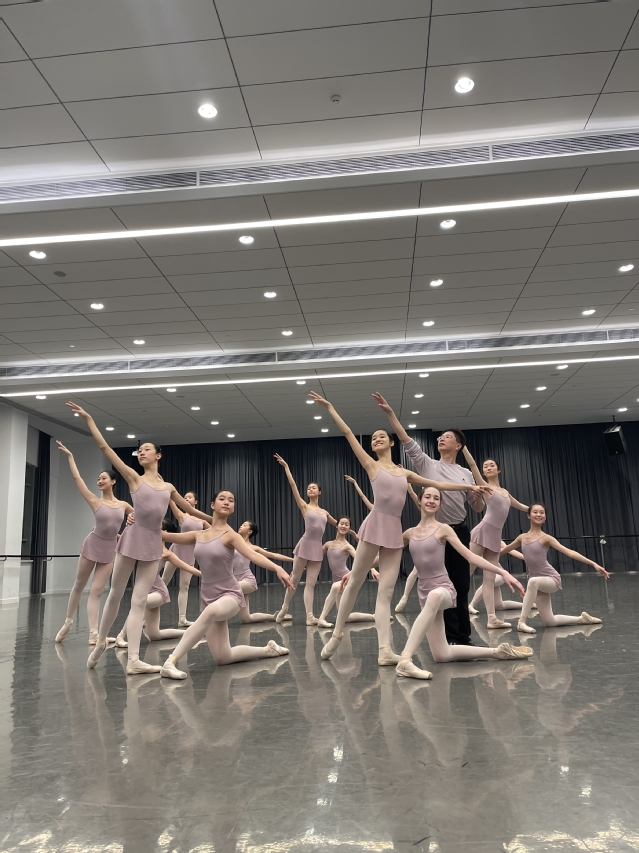

Shanghai Theatre Academy
The Yellow River
Principal Role: Dahe (大河)A large-scale symphonic dance poem, The Yellow River (黄河), produced by the Dance School of Shanghai Theatre Academy with its affiliated Shanghai Dance School. The production ran for six consecutive days at the Grand Theatre of the Shanghai International Dance Center, from 1 to 6 July 2021. I performed the principal role of Dahe.

Role
Dahe (大河)
Dahe is the production's sole male lead. I was one of three rotating principal performers cast in the role across the run.

Production
Shanghai Theatre Academy Dance School and Shanghai Dance School
Shanghai Theatre Academy describes The Yellow River as a flagship work developed and reworked over several years by its Dance School together with the affiliated Shanghai Dance School. The production is a designated major arts commission of the Shanghai Culture Development Foundation.
The choreographic team was led by Chen Jianian, Dean of the Dance School of Shanghai Theatre Academy and Vice Chair of the Shanghai Dancers Association. The work takes the Yellow River as its central image and, according to the Academy, was the first dance poem to integrate International Standard ballroom into the form. It first went on stage on 1 October 2019 and was revised repeatedly across subsequent runs.
- Role
- Dahe (大河), principal
- Lead choreographer
- Chen Jianian
- Produced by
- Dance School, Shanghai Theatre Academy, with the affiliated Shanghai Dance School
- Venue
- Grand Theatre, Shanghai International Dance Center
- Run
- 1–6 July 2021, six consecutive days
- Support
- Major arts commission, Shanghai Culture Development Foundation
Official Cast Record
Pending
The production's official account published the cast and creative list for the run, including the performances of 4 and 5 July. This section will carry that record and the corresponding source link.
Sources
- Shanghai Theatre Academy, Public Information Office
- China News Service, Overseas Chinese Network
The Academy announcement states the production’s funding, its choreographic leadership, the venue and the six-day run. The China News Service report covers a rehearsal visit in June 2021 and quotes the lead choreographer on the forthcoming run. Neither article names individual performers.
Photographs
Shanghai International Dance Center Grand Theatre





Images: Shanghai Theatre Academy Dance School. Applies to the four photographs in the grid above. The cover, ensemble and duet photographs are production stills held by the performer.